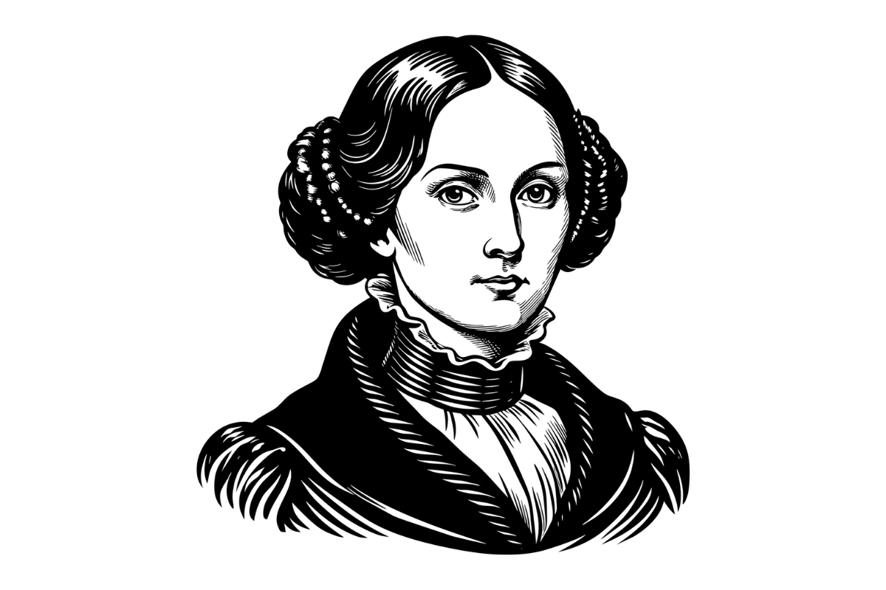

Ada Lovelace: The Enchantress of Numbers
"The Analytical Engine weaves algebraic patterns just as the Jacquard loom weaves flowers and leaves."
Augusta Ada King, Countess of Lovelace, was an English mathematician and writer, chiefly known for her work on Charles Babbage's proposed mechanical general-purpose computer, the Analytical Engine. She is believed by many to be the first computer programmer.
While Babbage focused on the machine's raw calculating power, Lovelace saw something more. She realized that if the engine could manipulate numbers, it could theoretically manipulate any symbols representing things in the real world, such as musical notes or letters.
Her notes on the engine include what is recognized as the first algorithm intended to be carried out by a machine. Because of this foresight, she is widely considered the founder of scientific computing.
Key Achievements
- Wrote the very first complex computer algorithm.
- Visionary who predicted computers could move beyond pure calculation into art and music.
- The U.S. Department of Defense named the programming language "Ada" in her honor.